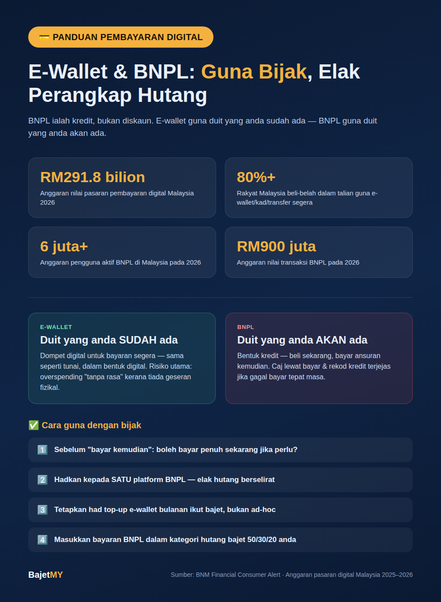

E-wallet dan Buy Now Pay Later (BNPL) kini sebahagian besar cara rakyat Malaysia berbelanja. Lebih 80% pengguna Malaysia kini membuat pembelian dalam talian menggunakan e-wallet, kad atau pemindahan bank segera, dan pasaran pembayaran digital negara dijangka terus berkembang pesat pada 2026. Kemudahan ini bagus — tetapi ia juga memudahkan berbelanja tanpa sedar, terutamanya apabila "bayar kemudian" terasa seperti bukan berhutang.
Apa itu e-wallet dan BNPL?
E-wallet (contoh: Touch 'n Go eWallet, GrabPay, Boost, Maybank MAE) ialah dompet digital yang menyimpan nilai wang untuk pembayaran segera — pada dasarnya sama seperti guna tunai, tetapi dalam bentuk digital.
BNPL (Buy Now Pay Later) pula berbeza secara asasnya — ia adalah kredit. Anda menerima barang/perkhidmatan sekarang tetapi bayar secara ansuran dalam beberapa minggu atau bulan akan datang, biasanya tanpa faedah jika dibayar tepat masa, tetapi dengan caj lewat bayar jika gagal.
Perbezaan penting: E-wallet menggunakan duit yang anda sudah ada. BNPL menggunakan duit yang anda akan ada — ia tetap satu bentuk hutang, walaupun tiada kad kredit terlibat.
Kenapa ia berkembang begitu pesat?
- Pasaran pembayaran digital Malaysia dijangka meningkat kepada kira-kira RM291.8 bilion pada 2026, berbanding RM262.5 bilion pada 2025.
- Lebih 80% rakyat Malaysia kini membeli-belah dalam talian menggunakan e-wallet, kad atau pemindahan bank segera.
- Pengguna BNPL dijangka melebihi 6 juta orang, dengan anggaran RM900 juta nilai transaksi pada 2026.
- Rakyat Malaysia menghabiskan purata 3 jam sehari di media sosial — platform yang semakin menjadi ruang niaga dan promosi BNPL/e-wallet secara langsung.
Risiko yang perlu disedari
1. "Bayar kemudian" terasa seperti percuma
Kajian tingkah laku kewangan menunjukkan orang lebih cenderung berbelanja melebihi kemampuan apabila bayaran dipecahkan kecil dan ditangguhkan — walaupun jumlah keseluruhan sama atau lebih tinggi selepas caj lewat bayar.
2. Berbilang platform BNPL serentak
Ramai pengguna guna lebih daripada satu platform BNPL pada masa sama. Tanpa rekod berpusat, mudah hilang pantauan jumlah komitmen sebenar merentasi platform — risiko "hutang berselirat" yang sukar dikesan sehingga terlambat.
3. Caj lewat bayar dan kesan skor kredit
Kegagalan membayar ansuran BNPL boleh dikenakan caj lewat bayar, dan sesetengah penyedia kini melaporkan rekod bayaran kepada agensi rujukan kredit — bermakna tunggakan BNPL berpotensi menjejaskan kelayakan pinjaman masa depan (rumah, kereta) sama seperti hutang kad kredit.
4. E-wallet menormalisasikan perbelanjaan "tanpa rasa"
Kerana tiada wang tunai fizikal berpindah tangan, otak manusia kurang "merasai" kehilangan wang berbanding transaksi tunai — menyebabkan overspending tanpa disedari, walaupun tanpa unsur hutang.
Cara guna e-wallet dan BNPL dengan bijak
- Anggap BNPL sebagai hutang, bukan diskaun — sebelum tekan "bayar kemudian", tanya: "Bolehkah saya bayar penuh sekarang jika perlu?" Jika tidak, itu tanda ia melebihi kemampuan sebenar anda.
- Hadkan kepada satu platform BNPL pada satu-satu masa supaya mudah pantau baki dan tarikh bayaran.
- Tetapkan had perbelanjaan e-wallet bulanan — pindah masuk jumlah tetap ikut bajet, bukan "top-up" berulang kali secara ad-hoc.
- Semak notifikasi transaksi setiap minggu — e-wallet memudahkan overspending kerana tiada geseran fizikal; semakan berkala membantu kekalkan kesedaran.
- Jangan guna BNPL untuk keperluan asas berulang (contoh: groceries bulanan) — jika keperluan asas sudah perlu BNPL, ini petanda aliran tunai bulanan perlu disemak semula, bukan sekadar cara bayar.
- Masukkan bayaran BNPL dalam bajet 50/30/20 anda di bawah kategori keperluan/hutang — bukan dianggap "percuma" kerana ia ditangguhkan.
Bila e-wallet dan BNPL memang berguna?
Kedua-duanya bukan sesuatu yang perlu dielakkan sepenuhnya:
| Situasi | Sesuai guna? |
|---|---|
| E-wallet untuk pembayaran harian menggantikan tunai | ✅ Sesuai — memudahkan rekod perbelanjaan |
| BNPL untuk pembelian sekali sahaja dalam bajet, dengan pelan bayar jelas | ✅ Sesuai jika mampu bayar tepat masa |
| BNPL untuk menampung kekurangan aliran tunai bulanan | ⚠️ Tanda amaran — semak bajet asas |
| BNPL merentas 3-4 platform serentak tanpa rekod pusat | ❌ Elak — risiko hutang berselirat |
| E-wallet tanpa had atau semakan transaksi berkala | ❌ Elak — risiko overspending tanpa sedar |
Ringkasan
E-wallet dan BNPL ialah alat pembayaran moden yang sah dan berguna — tetapi BNPL tetap satu bentuk hutang yang perlu dirancang, bukan "duit percuma" kerana bayaran ditangguhkan. Guna e-wallet untuk kemudahan, bukan sebagai alasan untuk kurang pantau perbelanjaan, dan hadkan BNPL kepada apa yang benar-benar termasuk dalam bajet bulanan anda.
Sumber
- Bank Negara Malaysia — Financial Consumer Alert & panduan literasi kewangan digital
- Anggaran pasaran pembayaran digital dan penggunaan BNPL Malaysia, 2025–2026